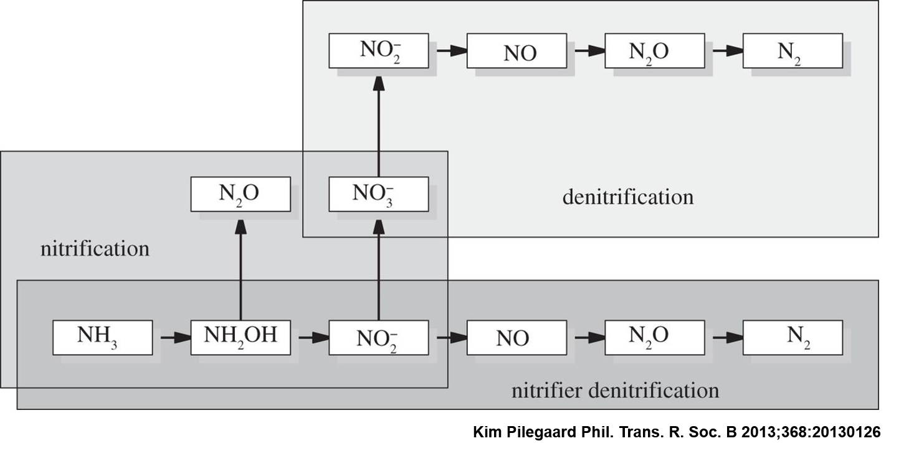
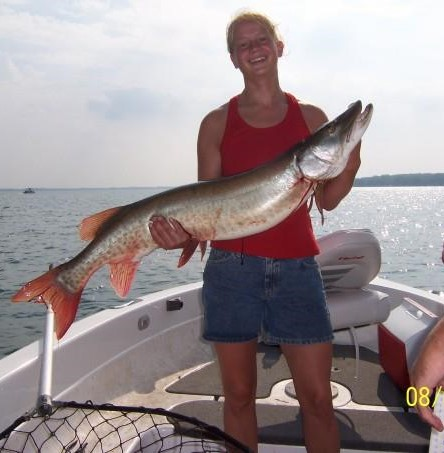
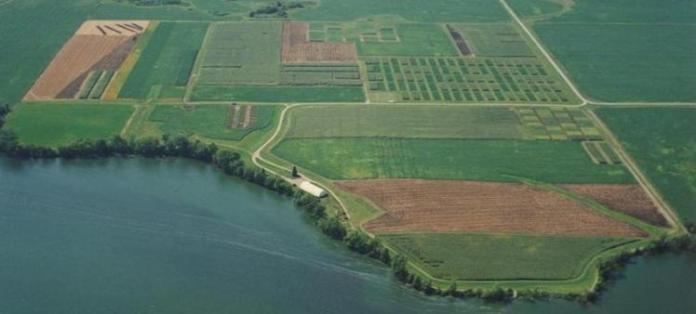
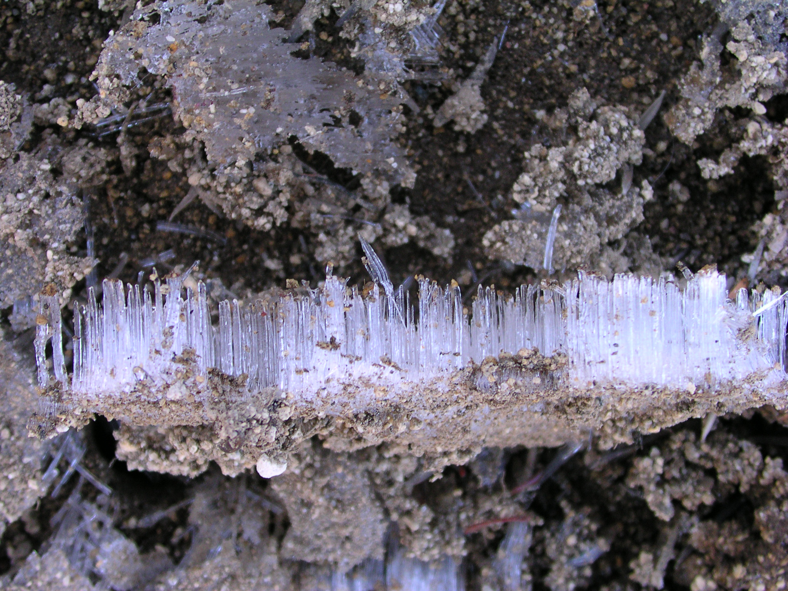
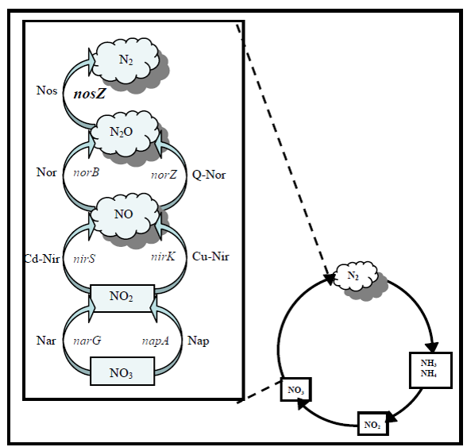
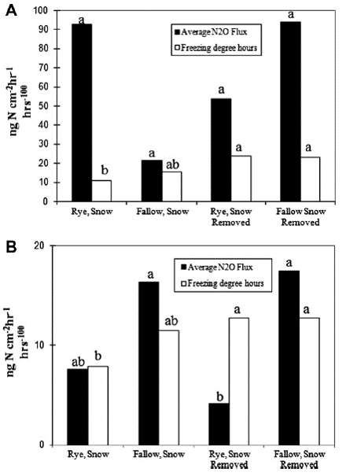
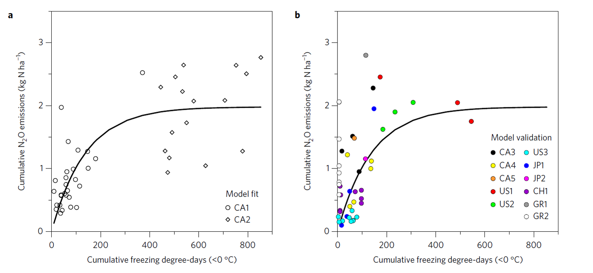
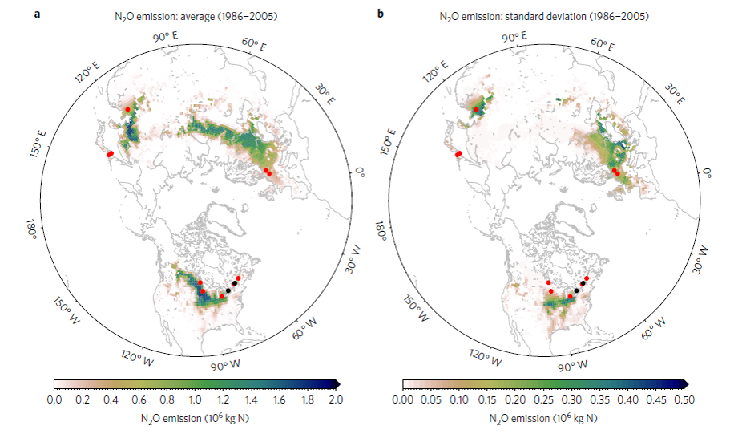
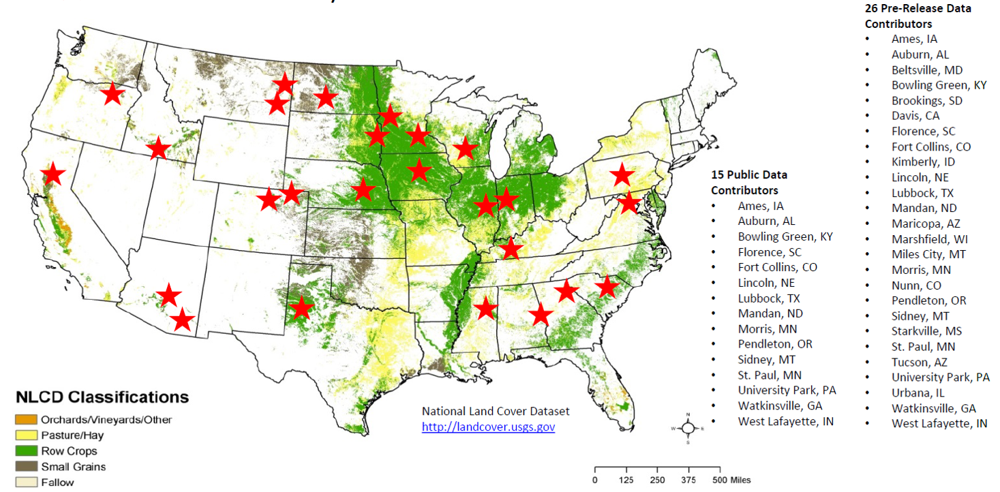
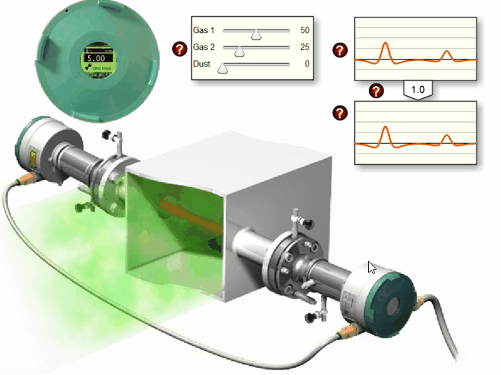

Spring Nitrous Oxide Emissions
Ranae Dietzel
Working towards a global estimate of N2O emissions
Why is N2O important?
- N2O has 300 times the global warming potential of CO2
- Acts as both a greenhouse gas and contributes to ozone depletion
- N2O is difficult to measure, leading to low confidence in budgets and poor understanding of feedbacks
Don’t know how much N2O we produce
Don’t know how to control N2O
What is N2O to an agronomist?
By-product of microbially mediated nitrogen transformations

Worked on N2O during Masters

Before that worked at USDA-ARS North Central Soil Conservation Research Lab in Morris, MN

Worked on 4 N2O experiments May-December

Greenhouse Gas Emission from Contrasting Management Scenarios in the Northern Corn Belt

Johnson et al., 2010, SSSAJ 74:396-406
Freeze-Thaw N2O Peaks

Great White Whale of Greenhouse Gases
Emissions of nitrous oxide from soils - Nature 1982, Duxbury et al.
Seasonal variability in emission of nitrous oxide from soil, Geophysical Research Letters, 1980, Bremner et al.

Bremner et al., 1980, Geophysical Research Letters 7:641-644
What causes peaks in the spring?

Wet conditions leading to anaerobic respiration (denitrification)
What causes peaks in the spring?
- Big flush of labile carbon and nitrogen as frozen microbes and plant cells thaw and burst
- Drop in pH as soil solution is flooded with new solutes
- Trapped gases not a big contributer to spring peaks
What causes peaks in the spring?
Nitrate reduction efficiency plays a huge role in spring peaks

What causes inefficiency?

Dietzel et al., 2011, Soil Biology & Biochemistry 43:1989-1991
More evidence from Canada

Wagner-Riddle et al., 2007, Global Change Biology 13:1722-1736
Colder winters -> more N2O
Modeled spring emissions from freezing degree days

Scaled model up to find current estimates miss ~ 28% of annual emissions

But acknowledged parameters beyond freezing degrees days are needed

USDA-ARS-GRACEnet
Greenhouse gas Reduction through Agricultural Carbon Enhancement network

GRACEnet collection and sites

GRACEnet Pubs up to 2012

GRACEnet data is/was available in easily accessible public database
Sites that experience freezing
Soil Hydrological Properties
Clay (%)
Sand (%)
Silt (%)
Fine Silt (%)
Coarse Silt (%)
Ks
\(\theta\)s (L L1) \(\theta\)r (L L1)
Substrate Properties
Organic Carbon
Organic Matter
Total Nitrogen
C:N Ratio
Soil Chemical Properties
pH
Cation Exchange Capacity
Exchangeable Mg
Exchangeable K
Exchangeable K Saturation
Excahgeable Ca
Base Saturation
Antecedant Weather Conditions
How cold - sum of daily minimum temperatures below 0
How warm - sum of daily maximum temperatures
How sunny - sum of daily total radiation
How wet - sum of daily precipitation
How snowy - sum of daily snowfall
How do these contribute to magnitude of spring N2O emissions?

Partial Least Squares (PLS) Regression
- Has some similarities to Principal Components Analysis (PCA)
- Good to use if predictors are correlated and contain similar predictive information
- Can produce a predictive model
Bjørn-Helge Mevik, Ron Wehrens and Kristian Hovde Liland (2016). pls: Partial Least Squares and Principal Component Regression.
Partial Least Squares (PLS) Regression

What does this mean?
- Across large spatial scales, freezing degree days is not a good predictor of spring N2O fluxes
- Within a specific soil type, we currently don’t have enough data to quantify the effect of winter weather conditions on spring N2O emissions
- Soil characteristics drive spatial variability of N2O emissions.
- Organic Matter
- \(\theta\)s
- Clay
- Exchangeable Mg
Early spring emissions are still important, neglected, and probably underestimated
- Need better (continuous) and more measurements

Need better modeling of this phenomenon
- Relationships are too complex for large-scale modeling
- N2O timing is very dynamic
- Cold winters manifest in soil conditions
- Daily time step, mechanistic model would make best predictions
- I am bringing spring N2O emissions to APSIM
- Then we can scale up (still dependent on good soils maps)
Nitrous oxide reduction efficiency drivers still in question
Variables listed should lead to more denitrification, but what controls nosZ?
Thank You!
- Agriculture and Food Research Initiative competitive grant number 2016-67012-25170 for the money
- USDA-ARS for all the data
- R Community for all the tools
- Integrated Cropping Systems lab (Archontoulis) for all the support